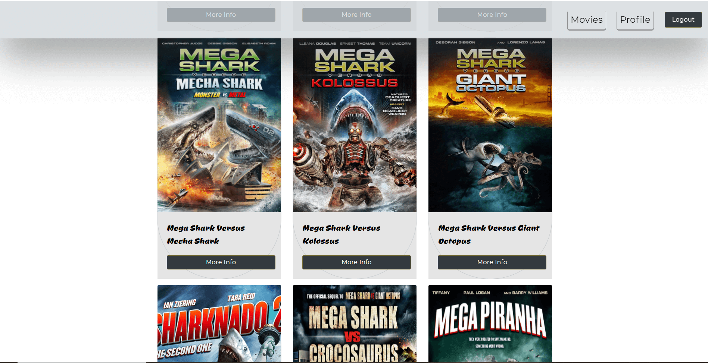
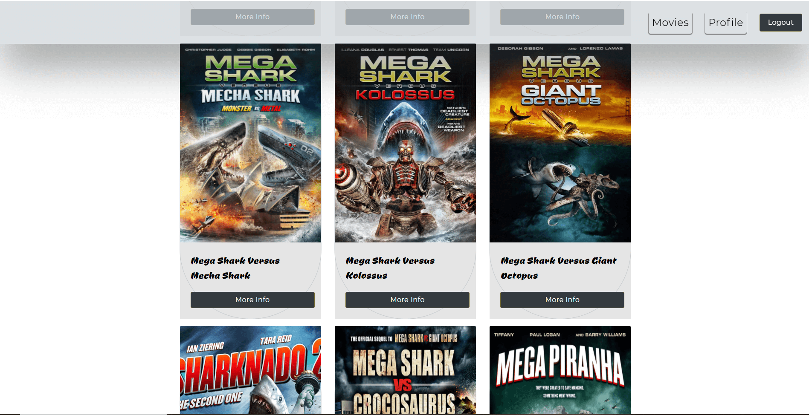

◇ Case Study ◇ Syfy full-stack project
Overview
The Syfy project consists of client-side components and a server-side componenet. I created two client-sides, one was built with Angular and the other with React. The server-side was built with Express (Node.js framework) and MongoDB, a non-relational/NoSQL database management program.
Purpose & Context
I wanted to make two client-sides using the JavaScript frameworks/libraries Angular and React, both of which would use the server-side that I created for this project. I chose Syfy movies because there are are already public movie APIs, so I wanted my movie API to be more niche and just only have movies created by Syfy, an American basic cable channel. Syfy is most famous for their Sharknado series.
Objective
The goal of this project was to learn how to make full-stack applications and to understand how they work.
 

The Process
Server-Side
The backend consists of the server, business logic, and business layers of the Syfy application. The REST API was built using JavaScript, Node.js, Express, and Mongoose. The REST API interacts with the non-relational/NoSQL database that I created with MongoDB. It interacts with my database through HTTP calls and common CRUD functions: create, read, update, delete. Mongoose is used to help with interactions.
Endpoints are described ► here
The API was tested with Postman. I included user authentication and authorization code in the form of basic HTTP authentication and JWT authentication.


Angular Client-Side
After completion of the REST API, I built the client-side with the MEAN stack. It is a responsive single-page application designed with Angular Material and SCSS. Anyone interested in creating an account can easily register and delete their account whenever they please. Registered users can view information about moviees and their respective genres and directors. Users can also update their profile information and add or delete movies to and from their favorites.


Challenges
This project came with a set of challenges that I would like to tackle again in future projects. I kept getting a CORS error while making the REST service.